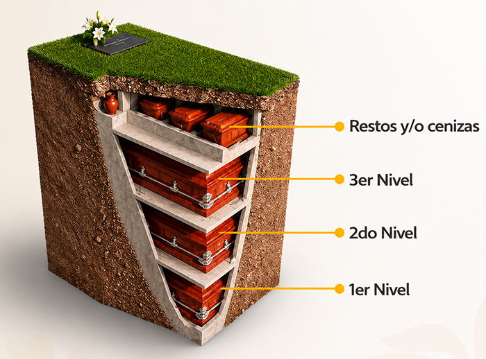

Sistema de entierro
Un diseño estructurado para el descanso de tu familia
Cada espacio está construido en niveles, con estructura de concreto reforzado que brinda seguridad y estabilidad a través del tiempo — pensado para alojar a varios miembros de la familia en un mismo lugar, con la solidez y dignidad que merecen.